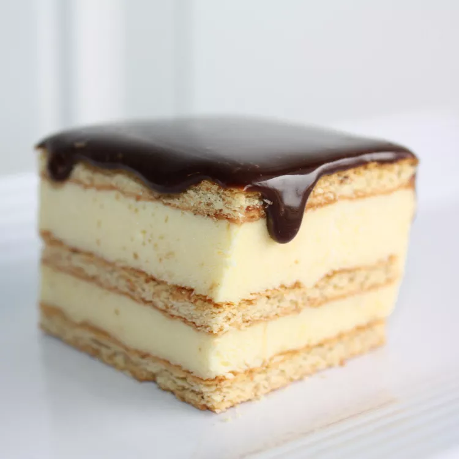

Chocolate Eclair Cake

Decription
This chocolate éclair cake is incredibly decadent and shockingly easy to make with just a few simple ingredients.
Ingredients
- Graham crackers: This easy recipe starts with a layer of graham crackers.
- Milk: You'll need four cups of milk.
- Pudding mix: Two packages of instant vanilla pudding mix lend flavor and help create the perfect consistency.
- Whipped topping: A package of thawed frozen whipped topping (such as Cool Whip) helps create the perfect fluffy and smooth texture.
- Chocolate frosting: Finish things off with prepared chocolate frosting. Use store-bought or make your own at home.
Directions
- Line a baking dish with graham crackers.
- Whisk the milk and pudding mix together, then fold in the Cool Whip.
- Layer the pudding mixture and graham crackers according to the recipe.
- Cook the frosting until thinned, then pour it over the cake.
- Refrigerate until ready to serve.